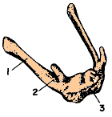

HUESO
HIOIDEO.
El
hueso hioideo es un hueso irregular, presenta la forma de una letra
"U" mayúscula, dispuesto en un plano horizontal y abierta hacia atrás,
situado entre la laringe y la mandíbula sirve de sitio de inserción a gran
cantidad de pequeños músculos y ligamentos. En este hueso se distingue un
cuerpo y dos pares de prolongaciones, los cuernos mayores y menores (astas
mayores y menores).
El
cuerpo es la parte central, de mayor grosor, presenta forma de un arco de
convexidad anterior, de cuyos extremos posteriores parte una
prolongación a cada lado, los cuernos mayores y
en el
punto de unión de éstos con el cuerpo, se destacan hacia arriba y atrás
otras dos prolongaciones, pero de menores dimensiones, los cuernos menores (Fig.
4.36).

FIG.
4.36. HUESO HIOIDEO. VISTA OBLICUA DERECHA Y ANTEROSUPERIOR. -
1, cuerno mayor. - 2, cuerno menor. - 3, cuerpo.